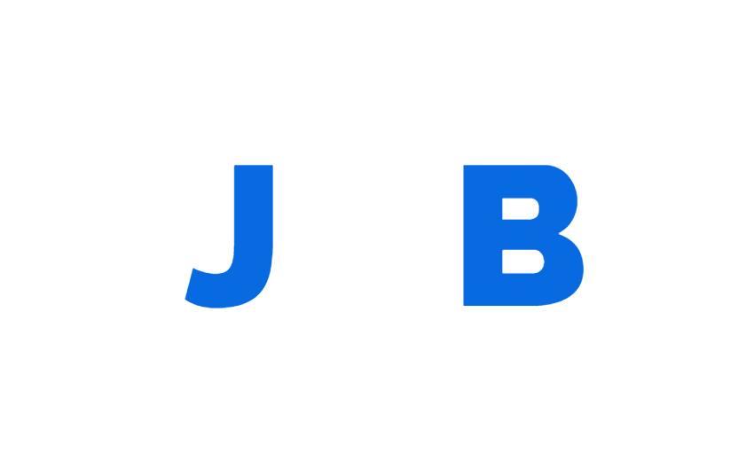

A story in coding
A little look at me

A little about me
My name is Jerry Bishop and I am someone who learned that I had an interest in getting technical skills a little later in my life.
At the age of 38 I had gone through much of my life quite confused about my mental state. Often being diagnosed with anxiety disorder and depression, I found it quite difficult some times. In January of 2022 I was relived to have a much more concise diagnosis, autism without intellectual imparement (previously known as Asperger's).
Relived may seem odd at first, but it really helped me start to understand myself as a person and put the characteristics of my condition in to a positive outlet... CODE!
So, this is the start of my portfolio following an excellent start with The Open University as a student of Computing and IT - A field I hope to break into within the next few years.
Academic Skills

Academic Record
Completed Modules
Access Modules
- Y033: Science, technology and maths: Distinction
Level One
- MU123: Discovering mathematics: Distinction
- TM111: Introduction to computing and IT 1: Distinction
- TM112: Introduction to computing and IT 2: Distinction
- TM129: Technologies in practice: Distinction
Current Modules
Level Two
- TT284: Web technologies Projected Distinction
- M250: Object oriented programming with Java: Projected Distinction
Future Modules
Level Two
- M269: Algorithms, data structures and computibility
- TM254: Managing IT: the why, the what and the how
Level Three
- TM354: Software engineering
- TM352: Web, mobile and cloud technologies
- TBA: Elective module
- TM470: The computing and IT project
What drives me
Section Content
A little bit on my interests
Section Content